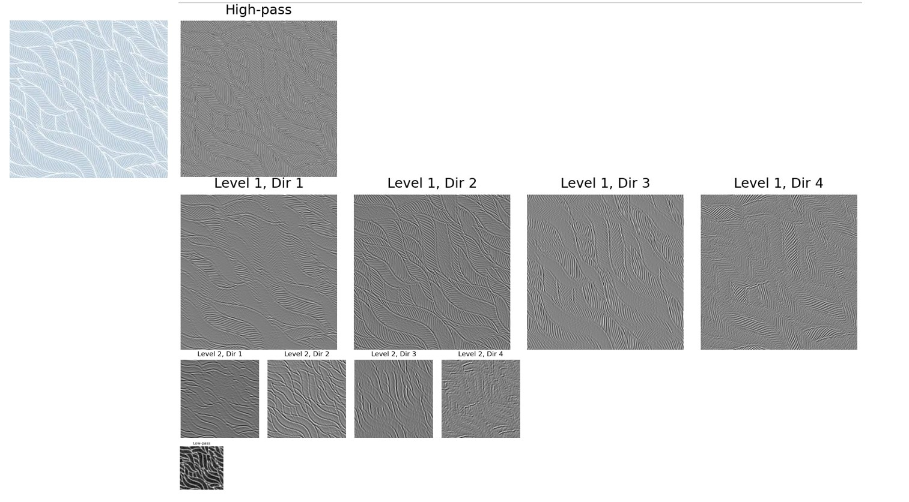

<Final Project: Pyramid-Based Texture Analysis and Synthesis
Yuze Zhang
Implementing Oriented Filters
Objective: Create and verify oriented filters, and demonstrate that the sum of all oriented filters
for a given band equals a standard Laplacian band-pass filter.
The oriented filters are used to extract direction-specific information from images, which is a critical component
of the steerable pyramid. These filters operate in the spatial domain to extract oriented features at various frequency
bands. The implementation involves validating the filters by summing them and showing that their combination is equivalent
to a Laplacian band-pass filter. To demonstrate their utility, a set of sample images is convolved with these filters, and
the resulting direction-specific features are visualized.
Results

oriented filter

example2

output
Each oriented filter corresponds to high-frequency waves in a specific direction. Adding up the band-pass results of all
oriented filters gives the high-frequency waves across all directions, which is equivalent to filtering directly with a
Laplacian filter.

laplacian band pass and summed oriented band pass
Constructing the Oriented Laplacian Pyramid
Objective: Decompose an image into multiple scales and orientations using the steerable pyramid.
The pyramid construction begins by applying a high-pass filter to compute the high-frequency residual. Next, a low-pass
filter is used to compute the low-frequency band. For each scale, the low-frequency band is further decomposed into multiple
directional subbands using oriented filters. This process repeats for each scale, progressively downsampling the low-frequency
band. The final low-frequency residual is stored as the base of the pyramid.
Results

oriented laplacian pyramid
Histogram Matching
Objective: Match the histogram of a noisy image to the source image in both the spatial domain and the pyramid domain.
Histogram matching ensures that the intensity or color distribution of an image matches the source texture. By iteratively
matching the frequency space and pixel space of the image, the frequency and pixel distributions of the noise gradually approach
those of the texture distribution, achieving the process of texture synthesis.
Results
historgram matching output
I also performed histogram matching on each channel of the three-channel image, resulting in the following output. Although it
still appears noisy, it now reflects the corresponding colors of the target image and has a similar histogram distribution. The
images below show the original noise, the target image, and the matched noise, with histograms representing the grayscale
distributions of each.

histogram matching output
histogram matching output
Texture Synthesis
Objective: Generate textures using the match-texture algorithm.
This step uses the histogram-matched pyramid as a basis. The synthesis begins with a noisy image and progressively adjusts
its pyramid representation to match that of the source texture. The process involves reconstructing the image from the adjusted
pyramid while maintaining histogram alignment at each level.

without PCA
To get better representation of the image, we use PCA for image processing and feature extraction. And final results are shown below.
Results